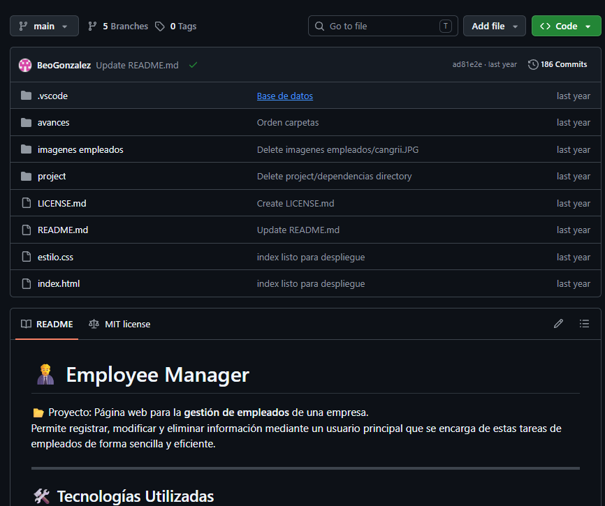

Gestion de Empleados (Trabajo en equipo)

Sistema web colaborativo desarrollado para la administración eficiente del personal en una empresa. Permite registrar, modificar y clasificar colaboradores según su departamento, cargo y remuneración, facilitando el control administrativo centralizado.
Desarrollo Colaborativo
Proyecto realizado en equipo aplicando control de versiones con Git/GitHub, organización de tareas y división modular del código.
Base de Datos Cloud
Integración con Supabase (PostgreSQL) para la gestión segura de datos en la nube y persistencia de la información de los empleados.
Interfaz & Lógica
Vistas diseñadas con HTML5 y CSS3 conectadas a la lógica de negocio en Java para procesar la información de forma dinámica.